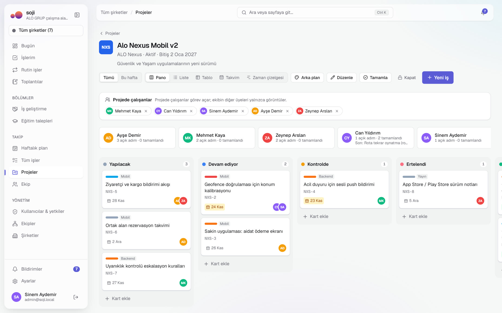
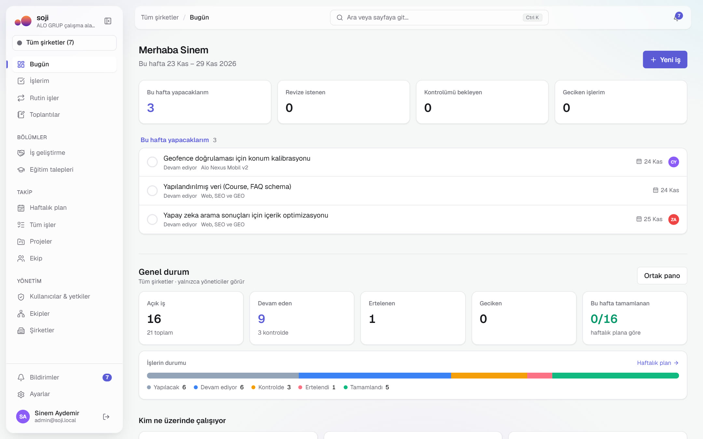
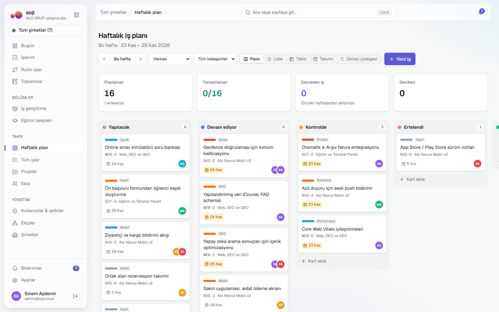

soji
ALO GRUP için çok şirketli proje, görev ve haftalık iş planı platformu
Problem
Grup şirketlerinin ekipleri haftalık işlerini ayrı Excel dosyalarında tutuyordu. Kimin ne üzerinde çalıştığı, hangi işin kaç haftadır sürüklendiği görünmüyordu.
Ne yaptım
- Pano (sürükle-bırak), liste, tablo, takvim ve zaman çizelgesi görünümleri
- Tamamlanmayan işlerin her pazartesi otomatik devri ve "N hafta devredildi" takibi (pg_cron)
- Rutin işler, toplantı tutanakları (PDF/Excel çıktısı), ekip iş yükü dashboard'u
- Eski Excel listelerini görevlere dönüştüren içe aktarma aracı
Güvenlik
Yetki kararları arayüzde değil veritabanında (Row Level Security). Biri API'ye doğrudan istek atsa bile başka şirketin verisini göremez; 4 rollü yetki modeli otomatik entegrasyon testleriyle doğrulanıyor.
Next.js 16TypeScriptSupabasePostgreSQL RLSpg_cronTailwind CSSdnd-kitVercel



Görsellere tıklayarak büyütebilirsiniz.